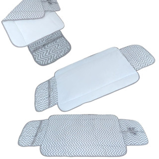

Trocador Portátil: Vale a Pena? Guia de Compra

Na hora de montar o enxoval, uma dúvida comum é entre um trocador fixo (o tampo que fica em cima da cômoda do quarto do bebê) e um trocador portátil (uma almofada dobrável, que vai junto na bolsa). Os dois resolvem o mesmo problema — trocar a fralda com segurança e conforto —, mas servem rotinas diferentes.
Trocador de cômoda x trocador portátil
- Trocador de cômoda: fica fixo num só lugar da casa, geralmente mais estruturado e com mais espaço ao redor pra apoiar produtos. Bom para quem troca fralda quase sempre no quarto do bebê.
- Trocador portátil: dobrável, cabe na bolsa de maternidade, permite trocar fralda em qualquer cômodo da casa ou fora dela — carro, casa de parentes, viagem. Não substitui totalmente o de cômoda se a rotina for sempre no mesmo lugar, mas resolve bem quando o bebê troca de ambiente ao longo do dia.
Quando vale a pena ter os dois
Não é incomum ter um trocador fixo no quarto pras trocas do dia a dia em casa, e um portátil separado só pra bolsa de passeio ou mala da maternidade — assim ele não sai do lugar toda vez que alguém precisa sair.
O que olhar na hora de comprar um trocador portátil
- Forro impermeável — evita que líquido passe pro tecido de baixo, importante pra usar em cima de qualquer superfície
- Tamanho dobrado — quanto menor dobrado, mais fácil cabe na bolsa sem ocupar todo o espaço
- Material da parte interna fácil de limpar — evita precisar lavar o trocador inteiro a cada uso
Um exemplo real
Um modelo que atende esses critérios, feito em tecido 100% algodão com camada plástica impermeável e manta acrílica de enchimento, tem 60cm x 45cm dobrado — tamanho pensado pra caber em bolsa de maternidade sem ocupar espaço demais. A parte interna plastificada facilita a limpeza depois do uso.
Perguntas frequentes
Trocador portátil substitui o de cômoda?
Só se a rotina de troca acontecer sempre fora do quarto do bebê — pra
quem troca fralda principalmente em casa, o de cômoda costuma ser mais
confortável no dia a dia, e o portátil complementa pros momentos fora
de casa.
Dá pra lavar na máquina?
Depende do modelo — verifique a etiqueta de cuidados de cada produto
antes de lavar, já que a camada impermeável pode não resistir a todo
tipo de lavagem.
Preciso de mais de um trocador portátil?
Não é necessário — um já resolve, mas algumas famílias preferem deixar
um fixo no carro e outro na bolsa, pra nunca esquecer.
Produto recomendado
Trocador Portátil Impermeável — ver preço atualizado na Shopee